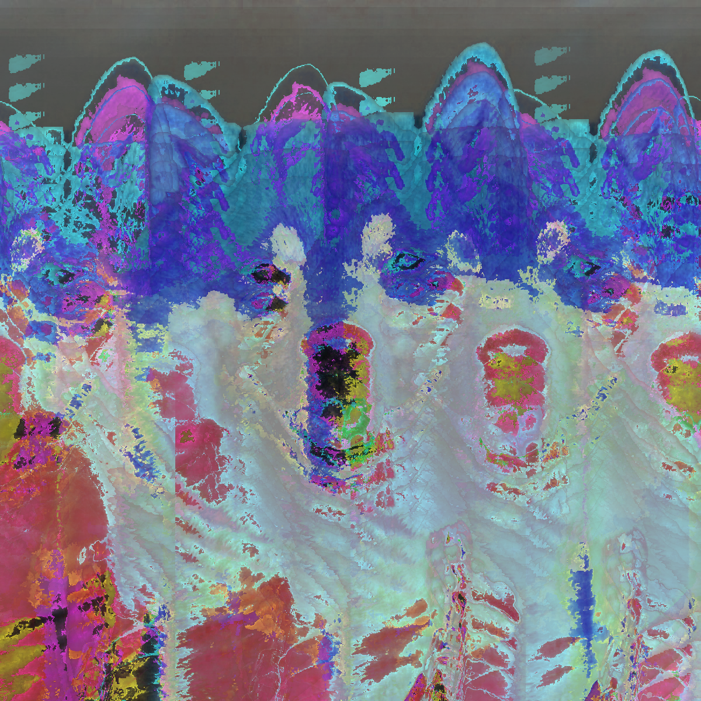
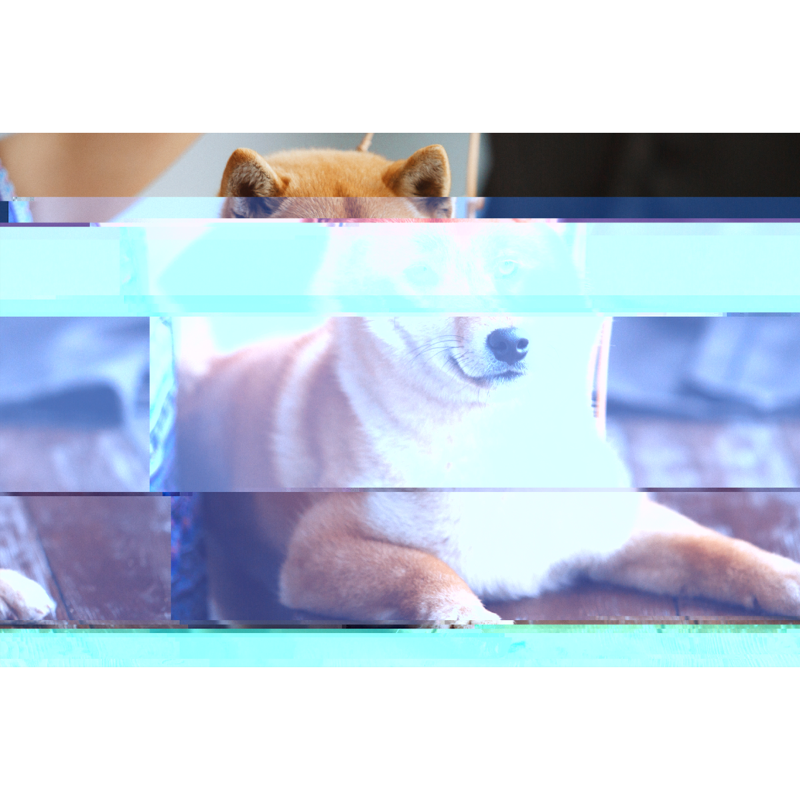
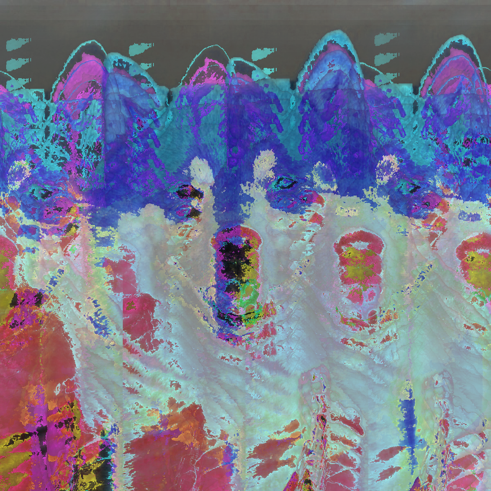
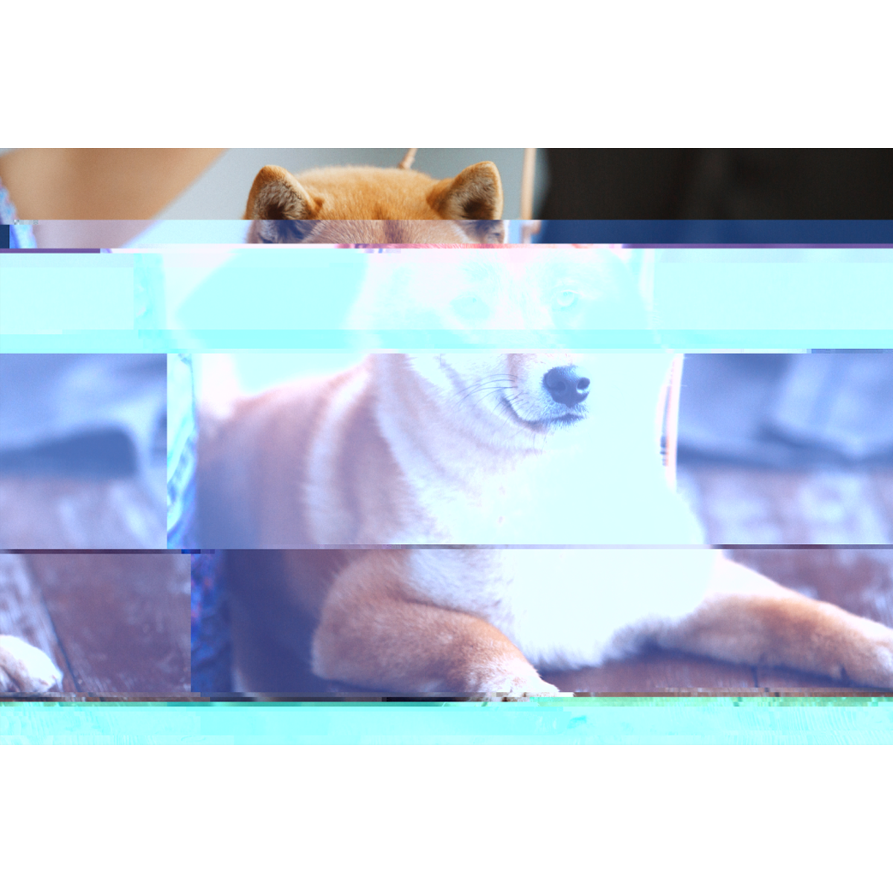

Statement
Pets are funny to see on the internet, but at the cost of the cute and funny video is the pet's overall health. Some people purposely overfeed their pets for entertainment purposes. I decided to glitch this image because this is an issue for some animals, and these pets can do nothing but accept the treatment. Certain breeds of animals are targeted for aesthetic purposes. Pets are sometimes subjected to becoming an accessory for their owners or are at risk of obesity because the owner wants to make a cute/funny viral video. As a result, some pets are mistreated or taken in by an owner who does not know how to properly care for the animal. The images are glitched because in some ways people don't view these pets as living beings, but rather they're viewed as an accessory or entertainment instead of a companion.